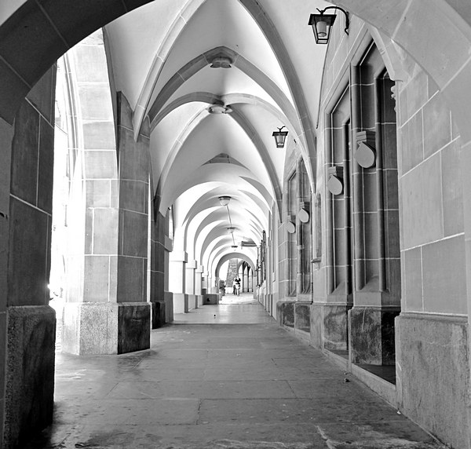
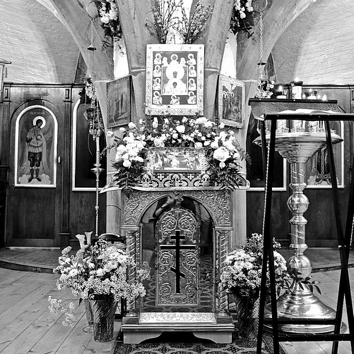

Beinahe unbemerkt reiht sich die Kirche in die Laubenfront der Berner Postgasse ein. Nur die beiden spitzförmigen Bogen und das Kreuzgewölbe heben sie von den anderen Gebäuden ab. Das sandsteinerne Wappen an der Decke des Laubenjochs zeigt ein grosses T – eine stilisierte Krücke. Sie erinnert an die Antoniter, die Gründer dieser Kirche. Die Mauernische, in der vor vielen Jahren eine Statue des heiligen Antonios stand, ist heute leer. Doch die Türen sind geöffnet. Frauen, Männer und Kinder füllen den hohen, schlichten und überraschend grossen Kirchenraum. Während man sich an diesem Sonntagmorgen zum Gottesdienst sammelt, dringt aus dem Untergeschoss bereits Gesang. Hohe und tiefe Stimmen, harmonisch verwoben, schwellen an, ebben ab; in der orthodoxen Liturgie unter dem Sterngewölbe der Krypta vereinen sich Himmel und Erde.
Laube in der Berner Postgasse vor dem Eingang zur Antoniterkirche. (Bild: Nadja Heimlicher)
Aus der Wüste bis nach Bern
Um das Jahr 251 n. Chr. kommt in einem unbedeutenden Dorf in Ägypten ein Junge namens Antonios zur Welt, der dem Christentum eine neue Prägung geben wird. Aus einer reichen Familie stammend, so erzählt es sein Biograf Athanasios, verliert Antonios mit 20 Jahren beide Eltern. Er geht in die Wüste und wird Einsiedler. Als Asket kämpft er gegen Dämonen, die ihn mit Vorliebe als schöne Frauen oder als gehörnte, bekrallte Ungeheuer heimsuchen, was in der Kunst später faszinierend-grauselnde Darstellung findet. Durch Sand, Hitze, Einsamkeit und Gebet geläutert, wird Antonios nicht nur zum geistlichen Vater und Heiler derer, die zu ihm in die Wüste pilgern, sondern auch zum berühmtesten Begründer des christlichen Mönchtums. Zu Beginn des 11. Jahrhunderts gelangen die Knochen des Heiligen auf abenteuerliche Weise in einen kleinen Ort in Frankreich, das heutige Saint Antoine l’Abbaye 40 Kilometer westlich von Grenoble. Als ein Kranker, vergiftet durch den Mutterkornpilz, nach der Anrufung Antonios’ des Grossen von seinem Leiden geheilt wird, steht der Verehrung des Heiligen nichts mehr im Weg. In der Hoffnung auf Genesung pilgern immer mehr Menschen nach Saint Antoine, und bald formiert sich um die verehrten Reliquien die Bruderschaft der Antoniter, die sich der Bedürftigen annimmt.
Ab dem Ende des 13. Jahrhunderts lassen sich die Antoniter auch in Bern nieder. Sie pflegen Kranke und beherbergen Pilger. Nachdem sie fast 150 Jahre in bestehenden Häusern gewirkt haben, können sie 1444 in der heutigen Postgasse eine kleine Kapelle und ein Ordenshaus errichten. Ab 1494 entsteht an derselben Stelle innert kurzer Zeit die heutige Kirche – eine Spitalkirche, in der die Kranken im offenen Kirchenschiff von ihren Betten aus die Messe mitverfolgen können. Der Maler, Dichter und spätere Reformator Niklaus Manuel malt vier Tafeln für den Hochaltar – eindrückliche Szenen aus dem Leben des heiligen Antonios, die heute im Berner Kunstmuseum ausgestellt sind.
Geschichte der Verwandlungen
1528 setzt die Reformation dem Wirken der Antoniter ein jähes Ende. Die Berner Regierung hebt den Orden auf, verweist die Brüder des Landes, der Kirchenschmuck wird herausgerissen und verbrannt; nur die Altartafeln werden gerettet und geraten in Familienbesitz. Als die Kirche wenig später in ein Kornhaus umgewandelt wird, beginnt für den Bau eine Geschichte der Wandlungen: Aus dem Kornhaus wird eine Sattlerwerkstätte, dann eine Postwagenremise, ein Antiquitätensaal, ein Pferdestall, eine Heubühne und schliesslich sogar ein Löschgerätemagazin. All diese Verwandlungen hinterlassen Spuren: Die Fresken aus der Gründungszeit werden beschädigt oder zerstört, Überflüssiges wird entfernt, und nach Bedarf werden in den hohen Raum Zwischenböden eingezogen. Erst als die Münstergemeinde die Antoniterkirche 1939 / 40 zu ihrem Kirchgemeindehaus macht, wird der vorreformatorische Zustand des Gebäudes so weit wie möglich wiederhergestellt. Der Berner Maler Fritz Pauli versieht die Wände mit neuen Fresken.
Die russisch-orthodoxe Kirche in der Krypta. (Bild: Nadja Heimlicher)
Kirchliche Heimat und Ort zum Entdecken
Die Gastfreundschaft, die den Antonitern zur Gründungszeit eigen war, gewinnt für die Kirche an der Postgasse im 20. Jahrhundert aufs Neue an Bedeutung. 1944 wird die ehemalige Sakristei, die sogenannte Krypta, als russisch-orthodoxe Kirche der Dreifaltigkeit geweiht. Nach dem 2. Weltkrieg wächst die lutherische Gemeinde in Bern stark an, man ist auf der Suche nach einem eigenen Kirchenraum. Dieser Wunsch geht für die deutschen und skandinavischen Lutheranerinnen und Lutheraner in Erfüllung, als die Münstergemeinde ihnen die Antoniterkirche im Jahr 1956 übergibt. Heute wird hier mehrmals wöchentlich Gottesdienst gefeiert – auf Deutsch, Schwedisch, Norwegisch, Finnisch, Russisch oder Ungarisch. Die Antoniterkirche ist für orthodoxe und lutherische Christinnen und Christen zur kirchlichen Heimat in der Berner Altstadt geworden und bleibt für Bernerinnen und Berner ein Ort, den zu entdecken sich lohnt.
Nadja Heimlicher ist Doktorandin am Institut für Historische Theologie an der Universität Bern und Pfarrerin in Biglen.
Weitere Artikel von {{ author.author }} finden Sie hier:
Zur Vertiefung:
- www.luther-bern.ch
- www.russischekirchebern.ch
- Gemeinhardt, Peter: Antonius. Der erste Mönch, München 2013.
- Hofer, Paul / Mojon, Luc : Die Kirchen der Stadt Bern, Basel 1969, 2–45.